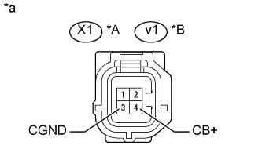

СИСТЕМА ПОМОЩИ ПРИ ПАРКОВКЕ > Ненормальное изображение с камеры системы помощи при парковке |
| 1.ПРОВЕРЬТЕ ЖГУТ ПРОВОДОВ И РАЗЪЕМ (ЭБУ СИСТЕМЫ ПОМОЩИ ПРИ ПАРКОВКЕ – ЗАДНЯЯ ТЕЛЕКАМЕРА) |
Для моделей с кронштейном запасного колеса:
Отсоедините разъем I2 ЭБУ системы помощи при парковке.
Отсоедините разъем X1 телекамеры заднего вида.
Измерьте сопротивление в соответствии со значениями, приведенными в таблице ниже.
| Контакты для подключения диагностического прибора | Режим | Заданные условия |
| I2-12 (CV+) - X1-2 (CV+) | Всегда | Менее 1 Ом |
| I2-14 (CB+) - X1-4 (CB+) | Всегда | Менее 1 Ом |
| I2-11 (CV-) - X1-1 (CV-) | Всегда | Менее 1 Ом |
| I2-13 (CGND) - X1-3 (CGND) | Всегда | Менее 1 Ом |
| I2-12 (CV+) - масса | Всегда | 10 кОм или более |
| I2-14 (CB+) - масса | Всегда | 10 кОм или более |
| I2-11 (CV-) - масса | Всегда | 10 кОм или более |
| I2-13 (CGND) - масса | Всегда | 10 кОм или более |
Для моделей без кронштейна запасного колеса:
Отсоедините разъем I2 ЭБУ системы помощи при парковке.
Отсоедините разъем v1 телекамеры заднего вида.
Измерьте сопротивление в соответствии со значениями, приведенными в таблице ниже.
| Контакты для подключения диагностического прибора | Режим | Заданные условия |
| I2-12 (CV+) - v1-2 (CV+) | Всегда | Менее 1 Ом |
| I2-14 (CB+) - v1-4 (CB+) | Всегда | Менее 1 Ом |
| I2-11 (CV-) - v1-1 (CV-) | Всегда | Менее 1 Ом |
| I2-13 (CGND) - v1-3 (CGND) | Всегда | Менее 1 Ом |
| I2-12 (CV+) - масса | Всегда | 10 кОм или более |
| I2-14 (CB+) - масса | Всегда | 10 кОм или более |
| I2-11 (CV-) - масса | Всегда | 10 кОм или более |
| I2-13 (CGND) - масса | Всегда | 10 кОм или более |
|
| ||||
| OK | |
| 2.ПРОВЕРЬТЕ ЭБУ СИСТЕМЫ ПОМОЩИ ПРИ ПАРКОВКЕ |
 |
Отсоедините разъем I2 ЭБУ системы помощи при парковке.
Измерьте сопротивление в соответствии со значениями, приведенными в таблице ниже.
| Подключение диагностического прибора | Условие | Заданные условия |
| I2-11 (CV-) - масса | Всегда | Менее 1 Ом |
| I2-13 (CGND) - масса | Всегда | Менее 1 Ом |
| *a | Устройство с неподсоединенным жгутом проводов (ЭБУ системы помощи при парковке) |
| Результат | Следующий шаг |
| OK | А |
| NG (для моделей с левосторонним рулевым управлением) | B |
| NG (для моделей с правосторонним рулевым управлением) | C |
|
| ||||
|
| ||||
| А | |
| 3.ПРОВЕРЬТЕ ЭБУ СИСТЕМЫ ПОМОЩИ ПРИ ПАРКОВКЕ |
|  |
Отсоедините разъем X1*1 или v1*2 телекамеры заднего вида.
Измерьте напряжение в соответствии со значениями, приведенными в таблице.
| Контакты для подключения диагностического прибора | Условие | Заданные условия |
| X1-4 (CB+) - X1-3 (CGND) | Зажигание включено, рычаг переключения передач в положении R | 5,5 - 7,05 В |
| Контакты для подключения диагностического прибора | Условие | Заданные условия |
| v1-4 (CB+) - v1-3 (CGND) | Зажигание включено, рычаг переключения передач в положении R | 5,5 - 7,05 В |
| *A | Для моделей с кронштейном запасного колеса |
| *B | для моделей без кронштейна запасного колеса |
| *a | Вид спереди разъема со стороны жгута проводов: (к задней телекамере в сборе) |
| Результат | Следующий шаг |
| OK | А |
| NG (для моделей с левосторонним рулевым управлением) | B |
| NG (для моделей с правосторонним рулевым управлением) | C |
|
| ||||
|
| ||||
| А | |
| 4.ПРОВЕРЬТЕ ЗАДНЮЮ ТЕЛЕКАМЕРУ В СБОРЕ |
С помощью осциллографа проверьте форму сигнала.
| *a | Устройство с подсоединенным жгутом проводов (ЭБУ системы помощи при парковке) | - | - |
| Параметр / Устройство | Описание |
| Контакты для подключения диагностического прибора | I2-12(CV+) - I2-11 (CV-) |
| Настройки прибора | 0,2 В / дел., 50 мкс / дел. |
| Условие |
|
| Результат | Следующий шаг |
| OK (для моделей с левосторонним рулевым управлением) | А |
| OK (для моделей с правосторонним рулевым управлением) | B |
| NG (для моделей с кронштейном запасного колеса) | C |
| NG (для моделей без кронштейна запасного колеса) | D |
|
| ||||
|
| ||||
|
| ||||
| А | ||
| ||